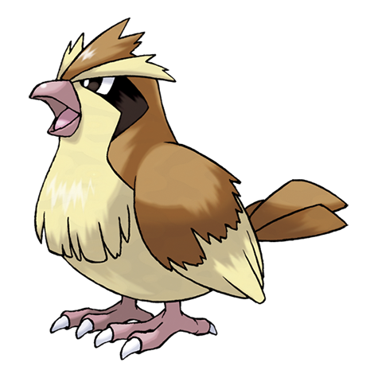
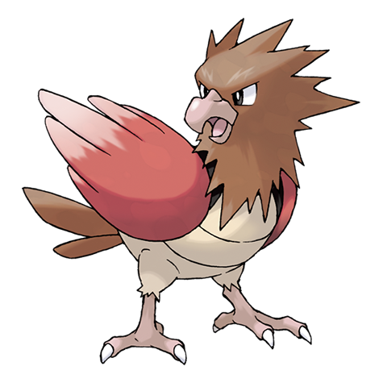

Problema 1
#016 Pidgey

El Profesor Oak realiza un censo de aves Pokémon que sobrevuelan la Ruta 1 durante la primavera. Tras varios días de conteo con prismáticos, registra exactamente 4.328 ejemplares entre Pidgey y Spearow.
Reto: ¿Cómo se descompone el número 4.328 según el orden de sus unidades (UM, C, D, U) y en forma de suma aditiva? Además, ¿cuál es el valor en unidades de la cifra situada en las centenas?
Operaciones y respuesta